Debugging in the Toolkit¶
You can debug the code in the currently active document window. Select one of the debugging commands to either run or to single-step through the program.
When you run code from the document window, it runs in the current target application's selected JavaScript engine. The Toolkit itself runs an independent JavaScript engine, so you can quickly edit and run a script without connecting to a target application.
Selecting a debugging target¶
The Toolkit can debug multiple applications at one time. If you have more than one Adobe application installed, use the drop-down list at the upper left of a document window to select the target application for that window. All installed applications that support JavaScript are shown in this list. If you try to run a script in an application that is not running, the Toolkit prompts for permission to run it.
Some applications use multiple JavaScript engines; all available engines in the selected target application are shown in a drop-down list to the right of the application list, with an icon that shows the current debugging status of that engine. A target application can have more than one JavaScript engine, and more than one engine can be active, although only one is current. An active engine is one that is currently executing code, is halted at a breakpoint, or, having executed all scripts, is waiting to receive events.
An icon by each engine name indicates whether it is running, halted, or waiting for input:
| Icon | Status |
|---|---|
| running | |
| 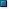 | halted |
| 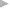 | waiting |
The current engine is the one whose data and state is displayed in the Toolkit's panes. If an application has only one engine, its engine becomes current when you select the application as the target. If there is more than one engine available in the target application, you can select an engine in the list to make it current.
When you open the Toolkit, the Toolkit itself is the default target application. When you select another target, if the target application that you select is not running, the Toolkit prompts for permission and launches the application. Similarly, if you run a script that specifies a target application that is not running (using the #target directive), the Toolkit prompts for permission to launch it. If the application is running but not selected as the current target, the Toolkit prompts you to switch to it.
If you select an application that cannot be debugged in the Toolkit, an error dialog reports that the Toolkit cannot connect to the selected application.
The ExtendScript Toolkit is the default editor for JSX files. If you double-click a JSX file in a file browser, the Toolkit looks for a #target directive in the file and launches that application to run the script; however, it first checks for syntax errors in the script.
If any are found, the Toolkit displays the error in a message box and quits silently, rather than launching the target application. For example:
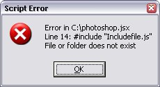
The JavaScript console¶
The JavaScript console is a command shell and output window for the currently selected JavaScript engine. It connects you to the global namespace of that engine.
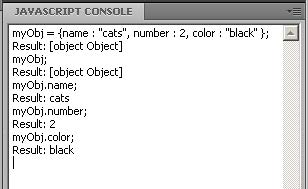
The console is a JavaScript listener, that expects input text to be JavaScript code.
You can use the console to evaluate expressions or call functions. Enter any JavaScript statement and execute it by pressing ENTER. The statement executes within the stack scope of the line highlighted in the Call Stack panel, and the result appears in the next line.
- You can use the up- and down-arrow keys to scroll through previous entries, or place the cursor with the mouse. Pressing ENTER executes the line that contains the cursor, or all selected lines.
- The right-click context menu provides the same editing commands as that of the document window.
- You can copy, cut, and paste text, and undo and redo previous actions.
- You can select text with the mouse, and use the normal copy and paste shortcuts.
- The flyout menu allows you to clear the current content.
- Commands entered in the console execute with a timeout of one second. If a command takes longer than one second to execute, the Toolkit generates a timeout error and terminates the attempt.
- The console is the standard output location for JavaScript execution. If any script generates a syntax error, the error is displayed here along with the file name and the line number. The Toolkit displays errors here during its own startup phase.
Controlling code execution¶
The debugging commands are available from the Debug menu, from the document window's right-click context menu, through keyboard shortcuts, and from the toolbar buttons. Use these menu commands and buttons to control the execution of code when the JavaScript Debugger is active.
|
Icon |
Action |
Hotkey |
Description |
|---|---|---|---|
|
Run/Continue |
F5 (Windows) Ctrl R (Mac OS) |
Starts or resumes execution of a script. Disabled when script is executing. |
|
|
Break |
Ctrl F5 (Windows) Cmd . (Mac OS) |
Halts the currently executing script temporarily and reactivates the JavaScript Debugger. Enabled when a script is executing. |
|
|
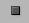 |
Stop |
Shift F5 (Windows) Ctrl K (Mac OS) |
Stops execution of the script and generates a runtime error. Enabled when a script is executing. |
|
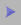 |
Step Over |
F10 (Windows) Ctrl S (Mac OS) |
Halts after executing a single JavaScript line in the script. If the statement calls a JavaScript function, executes the function in its entirety before stopping (do not step into the function). |
|
Step Into |
F11 (Windows) Ctrl T (Mac OS) |
Halts after executing a single JavaScript line statement in the script or after executing a single statement in any JavaScript function that the script calls. |
|
|
Step Out |
Shift F11 (Windows) Ctrl U (Mac OS) |
When paused within the body of a JavaScript function, resumes script execution until the function returns. When paused outside the body of a function, resumes script execution until the script terminates. |
Visual indication of execution states¶
When the execution of a script halts because the script reached a breakpoint, or when the script reaches the next line when stepping line by line, the document window displays the current script with the current line highlighted in yellow.
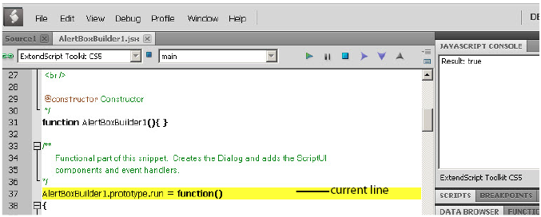
If the script encounters a runtime error, the Toolkit halts the execution of the script, displays the current script with the current line highlighted in orange, and displays the error message in the status line. Use the Data Browser to get further details of the current data assignments.
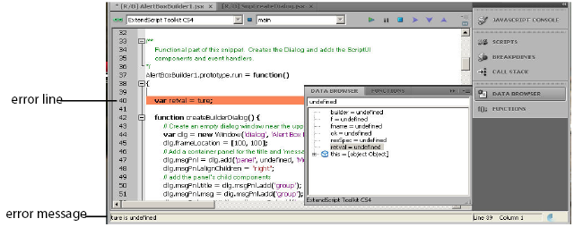
Scripts often use a try/catch clause to execute code that may cause a runtime error, in order to catch the error programmatically rather than have the script terminate. You can choose to allow regular processing of such errors using the catch clause, rather than breaking into the debugger. To set this behavior, choose Debug > Don't Break On Guarded Exceptions. Some runtime errors, such as Out Of Memory, always cause the termination of the script, regardless of this setting.
Setting breakpoints¶
When debugging a script, it is often helpful to make it stop at certain lines so that you can inspect the state of the environment, whether function calls are nested properly, or whether all variables contain the expected data.
- To stop execution of a script at a given line, click to the left of the line number to set a breakpoint. A red dot indicates the breakpoint.
- Click a second time to temporarily disable the breakpoint; the icon changes color.
- Click a third time to delete the breakpoint. The icon is removed.
Some breakpoints need to be conditional. For example, if you set a breakpoint in a loop that is executed several thousand times, you would not want to have the program stop each time through the loop, but only on each 1000th iteration.
You can attach a condition to a breakpoint, in the form of a JavaScript expression. Every time execution reaches the breakpoint, it runs the JavaScript expression. If the expression evaluates to a nonzero number or true, execution stops.
To set a conditional breakpoint in a loop, for example, the conditional expression could be "i >= 1000", which means that the program execution halts if the value of the iteration variable i is equal to or greater than 1000.
The Breakpoints panel¶
The Breakpoints panel displays all breakpoints set in the current document window. You can use the panel's flyout menu to add, change, or remove a breakpoint.
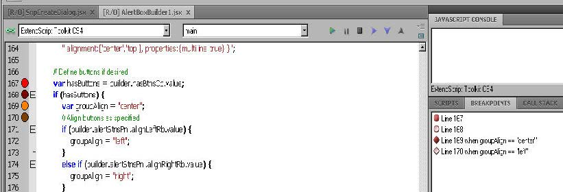
You can edit a breakpoint by double-clicking it, or by selecting it and choosing Add or Modify from the panel menu. A dialog allows you to change the line number, the breakpoint's enabled state, and the condition statement. You can also specify a hit count, which allows you to skip the breakpoint some number of times before entering the debugger. The default is 1, which breaks at the first execution.
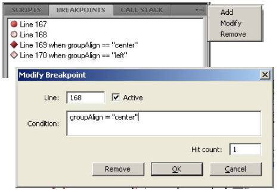
When execution reaches this breakpoint after the specified number of hits, the debugger evaluates this condition. If it does not evaluate to true, the breakpoint is ignored and execution continues. This allows you to break only when certain conditions are met, such as a variable having a particular value.
Breakpoint icons¶
Each breakpoint is indicated by an icon to the left of the line number in the document window, and an icon and line number in the Breakpoints panel. Different icons are used in the document window and in the Breakpoints panel.
| Document window | Breakpoints panel | Description |
|---|---|---|
| 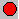 | Unconditional breakpoint. Execution stops here. | |
| 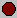 | Unconditional breakpoint, disabled. Execution does not stop. | |
| 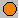 | Conditional breakpoint. Execution stops if the attached JavaScript expression evaluates to true. |
|
| 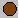 | Conditional breakpoint, disabled. Execution does not stop. |
Evaluation in help tips¶
If you let your mouse pointer rest over a variable or function in a document window, the result of evaluating that variable or function is displayed as a help tip. When you are not debugging the program, this is helpful only if the variables and functions are already known to the JavaScript engine. During debugging, however, this is an extremely useful way to display the current value of a variable, along with its current data type.
Tracking data¶
The Data Browser panel is your window into the JavaScript engine. It displays all live data defined in the current context, as a list of variables with their current values. If execution has stopped at a breakpoint, it shows variables that have been defined using var in the current function, and the function arguments. To show variables defined in the global or calling scope, use the Call Stack to change the context (see The call stack).
You can use the Data Browser to examine and set variable values. - Click a variable name to show its current value in the edit field at the top of the panel. - To change the value, enter a new value and press ENTER. If a variable is Read only, the edit field is disabled.
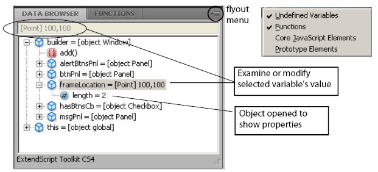
The flyout menu for this panel lets you control the amount of data displayed:
- Undefined Variables toggles the display of variables whose value is undefined (as opposed to null).
- Functions toggles the display of all functions that are attached to objects. Most often, the interesting data in an object are its callable methods.
- Core JavaScript Elements toggles the display of all data that is part of the JavaScript language standard, such as the Array constructor or the Math object.
- Prototype Elements toggles the display of the JavaScript object prototype chain.
Each variable has a small icon that indicates the data type. An invalid object (that is, a reference to an object that has been deleted) shows the object icon crossed out in red. An undefined value has no icon.
| Icon | Status |
|---|---|
| 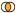 | Boolean |
| Number | |
| String | |
| Object | |
| Method | |
| 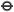 | null |
You can inspect the contents of an object by clicking its icon. The list expands to show the object's properties (and methods, if Functions display is enabled), and the triangle points down to indicate that the object is open.
The call stack¶
The Call Stack panel is active while debugging a program. When an executing program stops because of a breakpoint or runtime error, the panel displays the sequence of function calls that led to the current execution point. The Call Stack panel shows the names of the active functions, along with the actual arguments passed in to that function.
For example, this panel shows a break occurring at a breakpoint in a function RGBColorPicker():
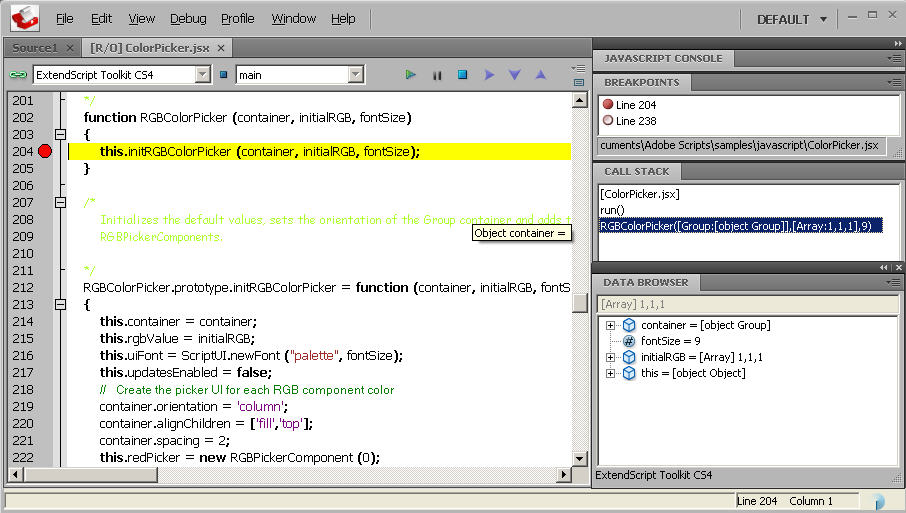
The function containing the breakpoint is highlighted in the Call Stack panel. The line containing the breakpoint is highlighted in the Document Window.
You can click any function in the call hierarchy to inspect it. In the document window, the line containing the function call that led to that point of execution is marked with a green background. In the example, when you select the run() function in the call stack, the Document Window highlights the line in that function where the RGBColorPicker() function was called.
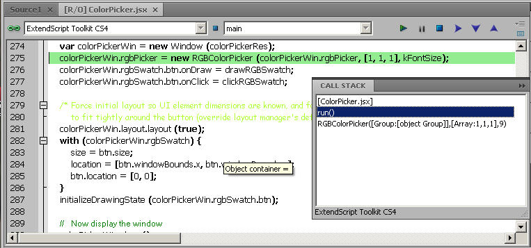
Switching between the functions in the call hierarchy allows you to trace how the current function was called. The Console and Data Browser panels coordinate with the Call Stack panel. When you select a function in the Call Stack:
- The Console panel switches its scope to the execution context of that function, so you can inspect and modify its local variables. These would otherwise be inaccessible to the running JavaScript program from within a called function.
- The Data Browser panel displays all data defined in the selected context.